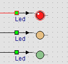
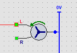
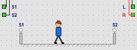
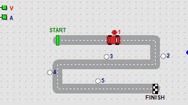
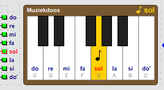

Lamp
LampOutput components show the result of the circuit. They have one or more inputs on the left, to which you connect the wires from the processing part.
An output component has no separate −: it is invisibly connected to ground. See Where are the plus and the minus? If there are power rails on the panel, plug the outputs in on the left of a − rail (ground).
LampLED: right-click a lamp and choose Colour › Red LED, Green LED or Orange LED. The lamp then becomes an LED in that colour and otherwise works just like a lamp. An LED that is off shows a light shade of its colour. Colour › Lamp turns it back into an ordinary lamp.

 Relay
RelayA relay is a switch operated by an electromagnet. On the left is input R to the coil, on the right the changeover contact with the terminals R1 (top) and R2 (bottom).
The relay shows how a small control signal switches a contact. R1 and R2 are only labels on the symbol: you cannot connect a wire to them. To really switch something with the contact, use the switching relay.
 Switching relay
Switching relayA relay whose contact you can really use: the coil operates a switch that turns a second circuit on and off, for example a lamp or a buzzer.

| Connection | Meaning |
|---|---|
| R+ (bottom) | coil input: the control signal, for example from a gate |
| R− (right) | other side of the coil, to the − rail (with power rails) |
| R1 (top left) | contact input: connect a switch or another source here, or plug the relay onto a + rail on its left: the contact then gets the voltage of that rail |
| R2 (top right) | contact output: from here you run a wire to a lamp, buzzer, ... |
While the coil is energized (the LED turns red), the contact is closed and R2 passes on the signal and the voltage of R1. When the coil is not energized, R2 is off, whatever is on R1. You start a wire at R2 like at any output: click the block of R2 with the wire button. If a wire already starts there, click the short line with the arrow just before R2.
 Buzzer
BuzzerSounds as long as the input is on. Handy as an alarm.
 Motor
MotorA motor with two inputs: L makes it turn left (anticlockwise), R right (clockwise). You see the rotor turn and a green arrow shows the direction.

With LogicRun you can make the motor turn according to a program, for example with the Motor left/right example: UIT0 to L, UIT1 to R.
 Person
PersonA person who walks left and right across a floor. You place him with the Person button in the component bar, below the voltmeter (the left half button). His inputs are on the left of the block: L makes him walk left, R right. At both ends of the floor there is a limit switch with a lamp: S1 on the left and S2 on the right.

A cart (seen from above) that drives along a winding road, from START to FINISH. You place it with the Cart button in the component bar, to the right of the Person button. Its inputs are on the left of the block: V makes it drive forward (towards the finish), A backward. Along the road there are 5 numbered posts; their lamp turns red when the cart passes.

A keyboard with 8 white piano keys: do re mi fa sol la si do' (C D E F G A B C', do' is the high do). You place it with the Music box button in the component bar, below the Person and Cart buttons. On the left there are 8 inputs, one per key, at the same height as UIT0 to UIT7 of LogicRun: place the music box at the same height as the LogicRun block and the wires run straight.

aplay, pw-play or
paplay (one of them is almost always installed). 7-segment display
7-segment displayThe display has one input. What it shows depends on what you connect to it:
 Voltmeter
VoltmeterThe voltmeter shows the voltage on its +, measured against ground, for example 3.3 V. Connect a wire to the + on the left, or place the meter between a + rail and a − rail. See Power & voltmeter.